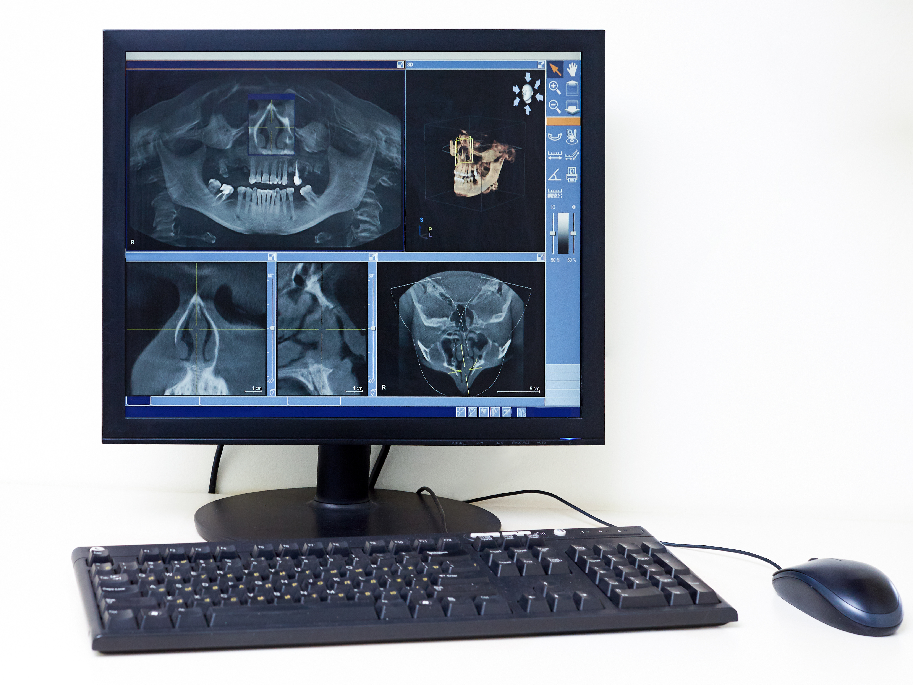
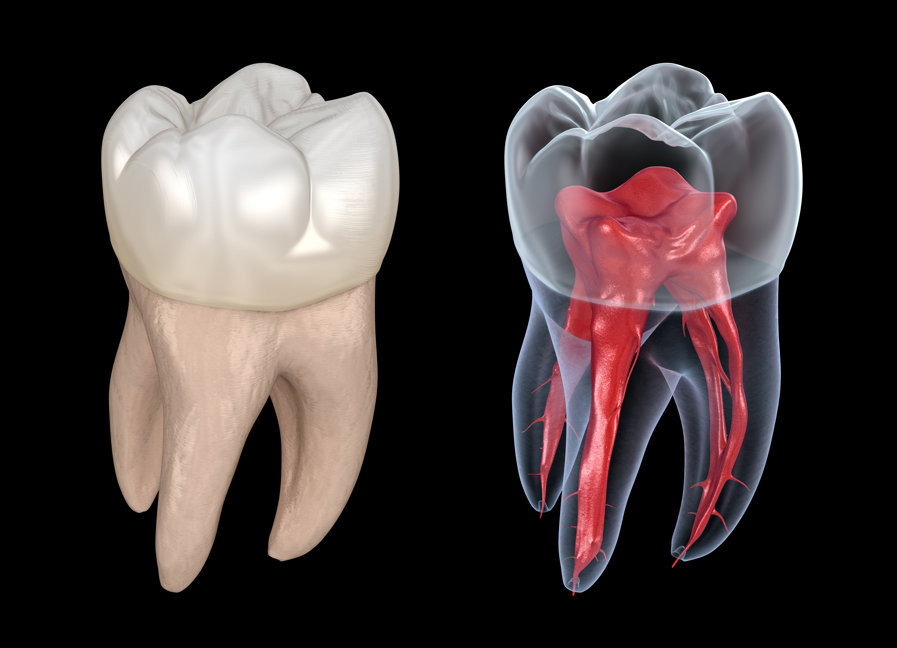
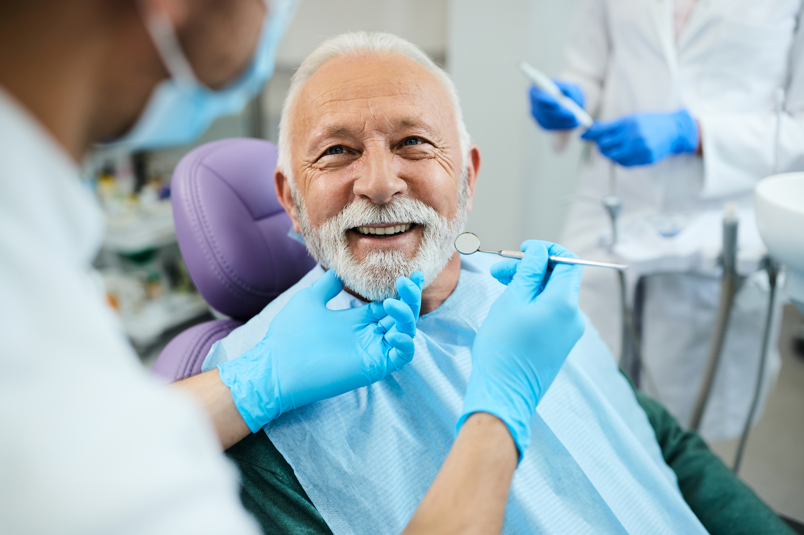
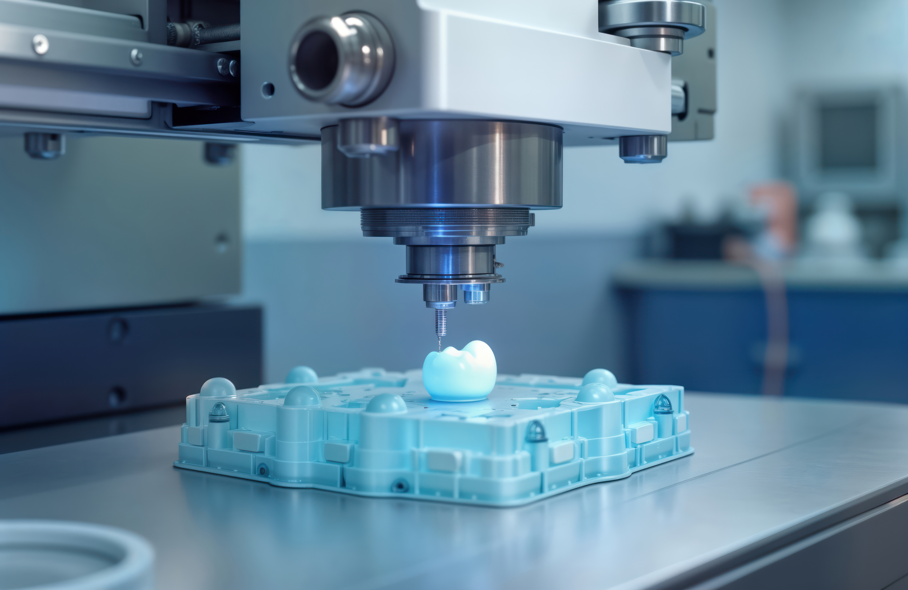
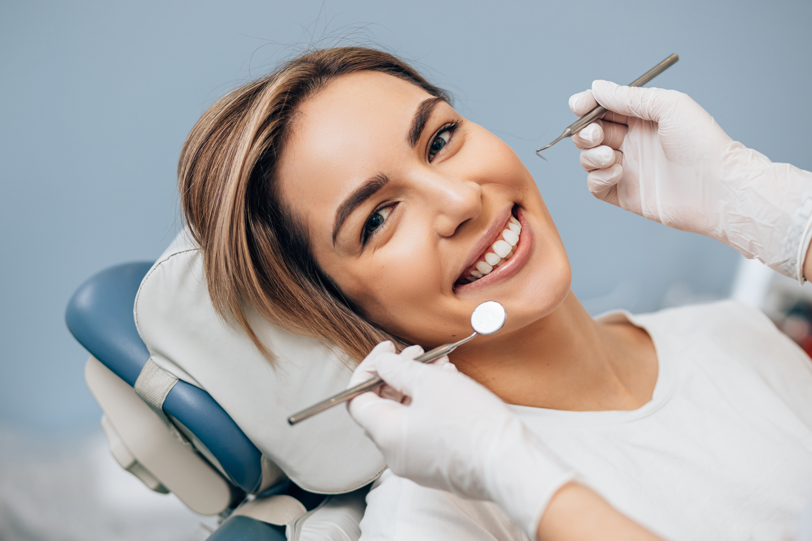

Our New Dental Technologies:
At 100MILES Dental Care, we are committed to staying at the forefront of dental technology to provide our patients with the best possible care. Here are some of the cutting-edge technologies we have recently integrated into our practice:

Digital X-Rays
Our state-of-art digital X-ray system provides high-resolution images with significantly less radiation exposure compared to traditional X-rays. This technology allows for quicker and more accurate diagnoses, ensuring that we can address dental issues promptly and effectively.

Intraoral Cameras
Our intraoral cameras offer a detailed view of your mouth, allowing us to capture high-quality images of your teeth and gums. This technology enchances our ability to detect and diagnose dental problems early, and it also helps us to better explain treatment options to our patients

Laser Dentistry
We have incorporated advanced laser technology into our practice, which allows for minimally invasive procedures with reduced pain and faster healing times. Laser dentistry is used for a variety of treatments, including gum disease therapy, cavity detection, and teeth whitening.

CAD/CAM Technology
Our CAD/CAM (Computer-Aided Design and Computer-Aided Manufacturing) system enables us to create precise and custom dental restorations, such as crowns, bridges, and veneers, in a single visit. This technology ensures a perfect fit and natural appearance, providing our patients with durable and aesthetically pleasing results.

3D Printing
We utilize 3D printing technology to create accurate dental models, surgical guides, and custom appliances. This innovation allows for more precise treatment planning and improved outcomes for our patients.

Teledentistry
Our teledentistry services provide convenient access to dental care from the comfort of your home. Through virtual consultations, we can assess your dental concerns, provide professional advice, and develop treatment plans without the need for an in-office visit.
Services on our Annual Dental Checkup
- Physical Examination: A thorough examination of your overall dental health, including checking for any signs of illness, abnormalities, or discomfort.
- Cleanings: Ensuring that your teeth are clean and free from plaque and tartar.
- X-Rays: Assessment and preventive measures against common dental issues.
- Dental Check-Up: Evaluation of your dental health, including checking for signs of dental disease and providing advice on dental care.
- Nutritional Guidance: Discussion about your diet, nutritional needs, and recommendations for maintaining a healthy smile.
- Blood Tests or Laboratory Work: Additional diagnostic tests may be recommended based on your age, dental history, or specific health concerns.